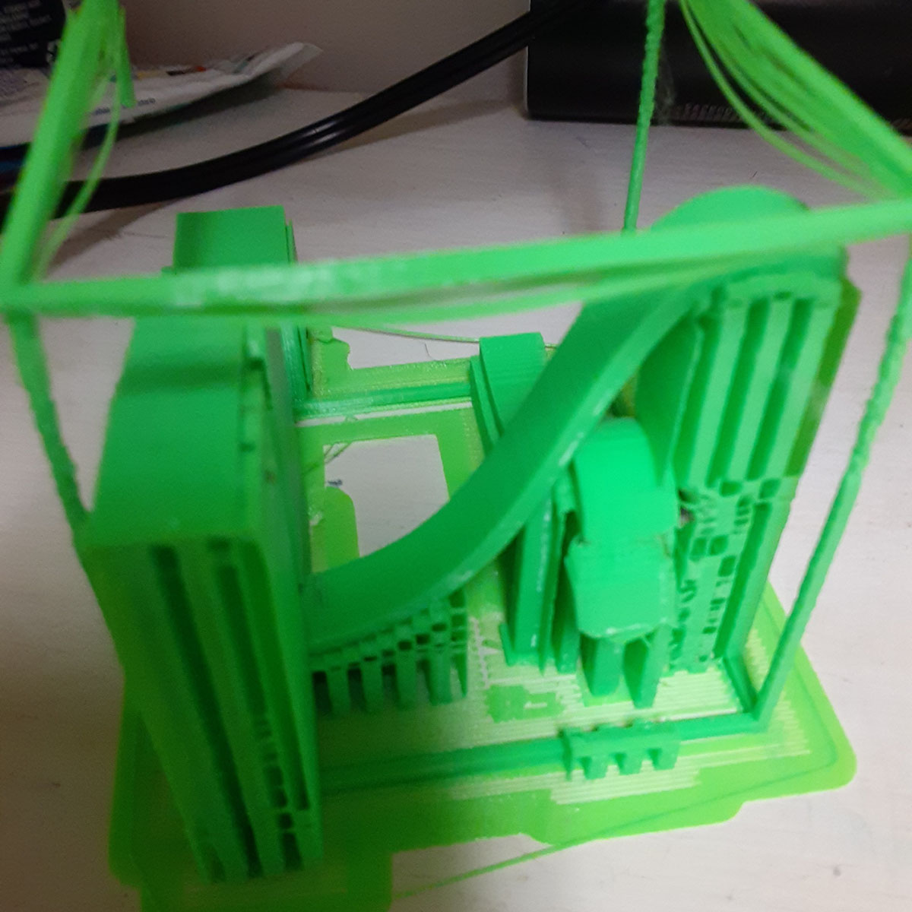
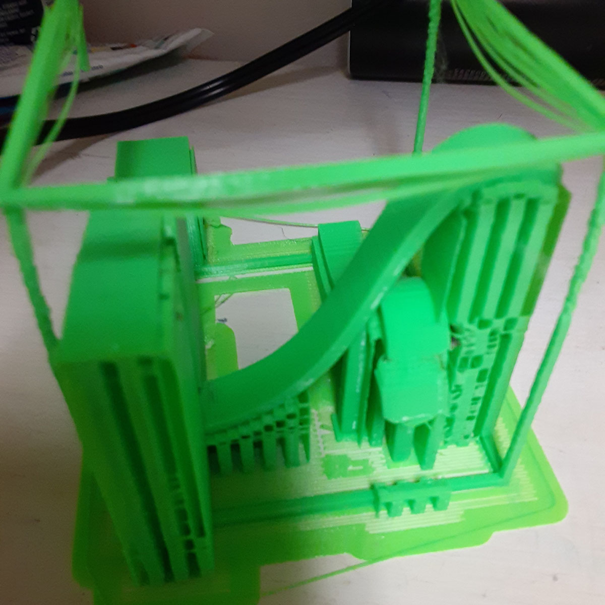

Comming soon
Two Finals in One
For my advanced geometry class, our final project is to imagine a world that applies by a different geometry to ours. We would also have to fabricate a model of some aspect or artifact of the world. Because there was so much overlap with this and my digifab final. The professors allowed me do both projects in one, A model of a world with a unique geometry, with a model fabricated using MULTIPLE digital fabrication methods.
prototype 1
 
